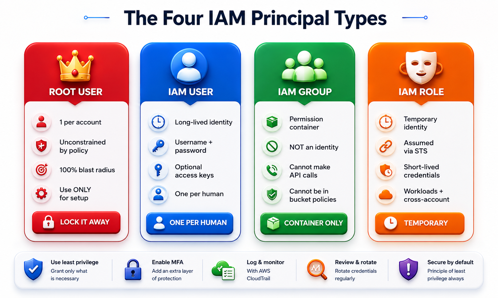
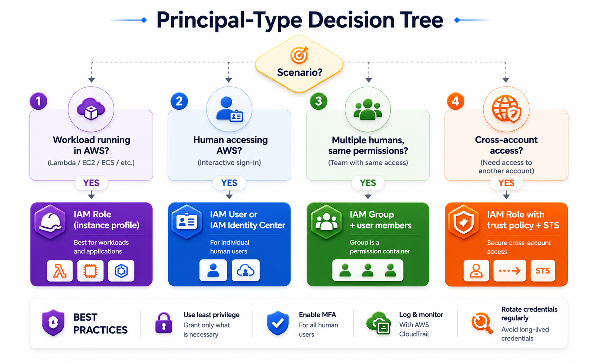

IAM recognises exactly four principal types. Getting these right is critical — especially the difference between a group (a container, not an identity) and a role (a temporary costume, not a person).

Figure 3: The four IAM principal types and their key characteristics
👑 Root User
The root user is created when you open an AWS account. It uses the email address you registered with. The root user is unconstrained by any IAM policy, service control policy, or permission boundary — it has 100% blast radius if compromised. You cannot delete it. You cannot restrict it with policies.
The root user should only be used for a tiny set of tasks: closing the account, changing the root email or password, restoring IAM permissions if accidentally revoked, activating IAM access to billing, registering as a Reserved Instance Marketplace seller, and enabling AWS GovCloud regions. Outside of these, lock it away.
❌ On the exam: Any scenario that proposes regular root user use is almost always the wrong answer — regardless of what other protections are layered on top. AWS Trusted Advisor flags daily root use as a high-priority finding.
🧑💻 IAM User
An IAM user is a long-lived identity. It has a username, a password for console access, and optional access keys for programmatic access. One IAM user per human. Never share IAM user credentials across team members — this destroys auditability because you can no longer tell which person took which action.
A common anti-pattern (that you'll see in wrong exam answers) is creating one IAM user per environment: dev-user, staging-user, prod-user, shared across the team. This is bad because it conflates identity with environment and makes incident response impossible.
🫙 IAM Group
Think of a group as a Tupperware bowl. You put IAM users into it, and the bowl holds permissions. When a user is in the bowl, they inherit those permissions. When they leave, those permissions are gone. IAM groups are permission management containers — they are NOT identities. A group cannot make API calls. Only the users inside the group can.
⚡ IAM groups cannot be principals in a resource-based policy. When you write an S3 bucket policy, you must reference the underlying users or roles, not the group they belong to. This is a direct exam trap.
Groups shine when teams grow. Migrating from per-user policy attachments to a group-based model typically reduces the number of policy attachments by around 80%, and makes permission changes a one-line edit instead of touching 40 individual users.
🎭 IAM Role
Think of a role as a costume. A principal puts it on (assumes it), has whatever superpowers it grants for a limited time, and then takes it off and returns to normal. IAM roles are temporary identities assumed through AWS Security Token Service (STS), which issues short-lived credentials that expire automatically. They are used for cross-account access, workload access (EC2, Lambda, ECS), and federation.
✅ Quick exam decision tree:
• Scenario involves a workload (Lambda, EC2, ECS, EKS, Fargate) → IAM Role
• Scenario involves a human → IAM User (or federated identity via IAM Identity Center)
• Scenario involves a set of humans with the same permissions → IAM Group
• Scenario involves cross-account access → IAM Role with cross-account trust policy
• Scenario mentions Active Directory, SAML, SSO, multi-account → IAM Identity Center

Figure 4: Principal-type decision tree used by senior cloud engineers on the job
![Cross-account access architecture diagram with two AWS accounts side by side. Account B on the left labeled Source Account contains an EC2 instance with an instance profile attached. Account A on the right labeled Destination Account contains an S3 bucket with encrypted videos, a KMS key, and an IAM role with trust policy. An arrow labeled STS AssumeRole points from Account B's EC2 to Account A's IAM role. A second arrow labeled GetObject plus Decrypt goes from the assumed role to S3 and KMS. CloudTrail icon at bottom of Account A captures all reads.](images/iam-cross-account-flow.png)
![Full architecture diagram for ACME Media Platform. Left side Account A labeled Production with S3 bucket acme-videos, KMS customer managed key, IAM role DataAnalystRole with trust policy, S3 bucket policy with explicit deny on DeleteObject for DataAnalystRole, and CloudTrail with data events enabled. Right side Account B labeled Analytics with EC2 instances, instance profile with STS AssumeRole permission, and arrow via AWS STS to Account A role. Groups section at bottom showing DataAnalystGroup with data analyst users, and DeveloperGroup with developers who can also assume DataAnalystRole temporarily.](images/project-acme-architecture.png)